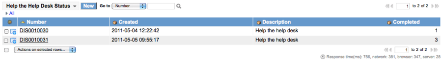
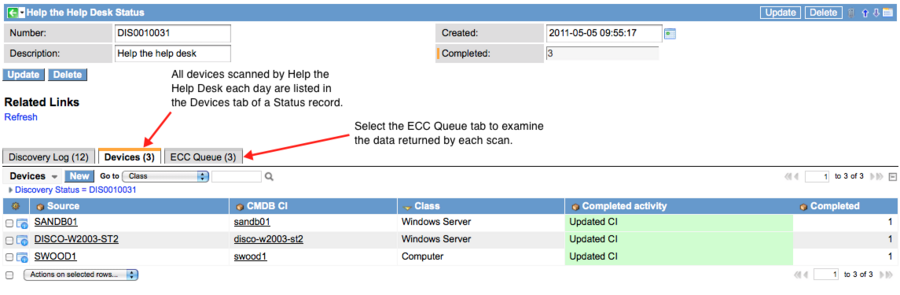

Help the Help Desk Status
| |
Note: This article applies to Fuji and earlier releases. For more current information, see Configuration Management at http://docs.servicenow.com
The ServiceNow Wiki is no longer being updated. Visit http://docs.servicenow.com for the latest product documentation. |
Contents
1 Overview
Help the Help Desk displays the status of all scans in daily records (System Definition > Help the Help Desk Status). Drill down into a record for details on how the CMDB was updated that day from scans performed on the instance.
2 Accessing the Status Record
To view scan results for a 24 hour period:
- Navigate to System Definition > Help the Help Desk Status.
- A new status record is created each day and displays the number of scans completed (devices scanned). The Description field shows Help the help desk as the source of the scan.
- 
- To view the details of individual scans, drill down into the scan record.
- In the scan record, select the Devices tab to view all the devices scanned by Help the Help Desk that day.
- Each CI displays the device class and the activity completed: Created CI or Updated CI. By default, Help the Help Desk cannot discriminate class between servers and workstations and classifies each CI as a Computer. However, if Discovery is activated on the instance, Help the Help Desk can classify CIs as either Windows Servers or Computers.
- 
- Select the ECC Queue tab to examine the data payload returned from each scan.
{kind=link}
{kind=link}
2.1 Discovery Status List
If Discovery is active on the instance, the Help the Help Desk status appears in the Discovery Status record list. These scan records are described as Help the help desk in the list to differentiate them from regular Discoveries run from a schedule or a UI Action. Click into the status record to access the forms described in this page.
{kind=link}
3 Devices
Select the Devices Related List to view summaries for each device scanned. When Help the Help Desk is finished for a device, the final disposition is displayed in the Completed activity column. Successful Discoveries that result in updated or created CIs are highlighted in green. To view the log entries for errors (such as connection failure) on a specific device, select the Discovery Log tab. To view specific probe data, including the contents of the data package sent to the instance, select the ECC Queue tab. The device record provides the following information:
| Field | Input Value |
|---|---|
| Discovery Status | Reference number for the Help the Help Desk scan activity for a specific day. |
| Source | The name of the source device, derived from the name of the CI. |
| Completed activity | The Help the Help Desk scan registers one of two possible completed activities: Updated CI or Created CI. |
| CMDB CI | Name of the CI from the CMDB. This reference field provides access to the record for the CI. |
| Completed | Displays the number of times Help the Help Desk was run on this computer for this day. |
{kind=link}
3.1 Showing Other Discoveries
If older or newer discoveries exist for the current device, the appropriate Related Links appear on the form. Click a link to open the device record for a full Discovery. This record displays additional probe and sensor details and provides access to the device timeline. To return to the Help the Help Desk device record, click the link to show the older or newer discovery (the opposite action that brought you to the Discovery record).
{kind=link}
4 Discovery Log
The Discovery Log provides access to all the records for the scan. From this list, you can view individual log records, the sensor record that displays the probe payload, the CI record from the CMDB, and the scan record.
{kind=link}
4.1 Log Information
The Discovery Log provides the following information:
| Field | Input Value |
|---|---|
| Created | Timestamp of the Help the Help Desk activity. Each timestamp defines the approximate time of the activity. Several Help the Help Desk scans may occur in random order within a second. |
| Level | Classifies the activity into one of the following levels for general sorting:
|
| Message | Informative message detailing the outcome of the activity or the Help the Help Desk progress. |
| Sensor | Names the sensor that processed the results of the scan (WMILoader) |
| CMDB CI | Names the device for which a record was created or updated in the CMDB. Click this link to drill down into the CI record for the device. |
| Source | Names the source of the scan, which is HTHD (Help the Help Desk). |
| Device | Lists the name of the CI scanned. Click this link to view the scan record for that device. |
4.1.1 Filtering the Log
Sort the log by different values to create your view of Discovery activities. Use the breadcrumbs above the header bar to return to a previous view. To filter the list quickly by a specific target value, right-click in any column and select Show Matching or Filter Out. For example, show only the Warning level activities, and then select the specific type of failure to display from the Message field.
5 ECC Queue
The External Communication Channel (ECC) Queue lets you see all the phases of a scan for each device for a specific day. To open the ECC Queue, open a Help the Help Desk Status record, and then select the ECC Queue Related List. Each scan has one record in the ECC Queue for the sensor (marked as input in the Queue column). Successful scans are indicated by a State of processed.
An ECC Queue record provides the following fields:
| Field | Input Value |
|---|---|
| Agent | The name of the MID Server that initiated the probe. |
| Topic | Type of sensor that was active (WMILoader). |
| Name | The name of the Help the Help Desk script (wmi.hta) that performs the scan. |
| Source | The name of the machine being scanned. |
| Queue | Indicates that the record is for a sensor (input). |
| State | Indicates that the sensor is in the process of completing its task (for example, processed or processing) |
| Processed | Time that this sensor's task was finished. |
| Created | Time that this sensor was activated. |
| Sequence | Internal ID for the execution sequence for this sensor. |
| Payload | Contents of the sensor payload reported to the instance. Click the XML button to display the code in an XML view. |
An ECC Queue record for Help the Help Desk looks like this:
{kind=link}
5.1 Viewing CMDB Records
From the ECC Queue, you can view the CMDB record for the configuration item (CI) that was probed, using either of the following links:
- Right-click a device in the ECC Queue record list and select Go to CMDB item.
- In an ECC Queue record, click the Go to CMDB item Related Link.